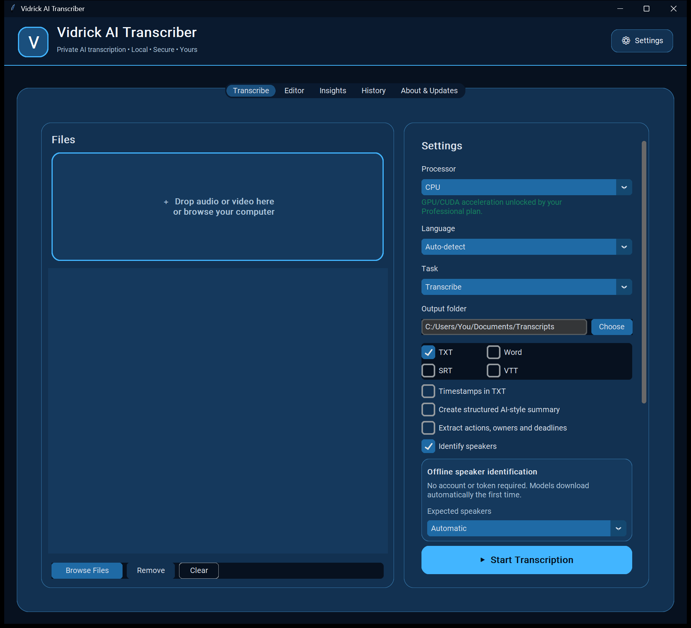
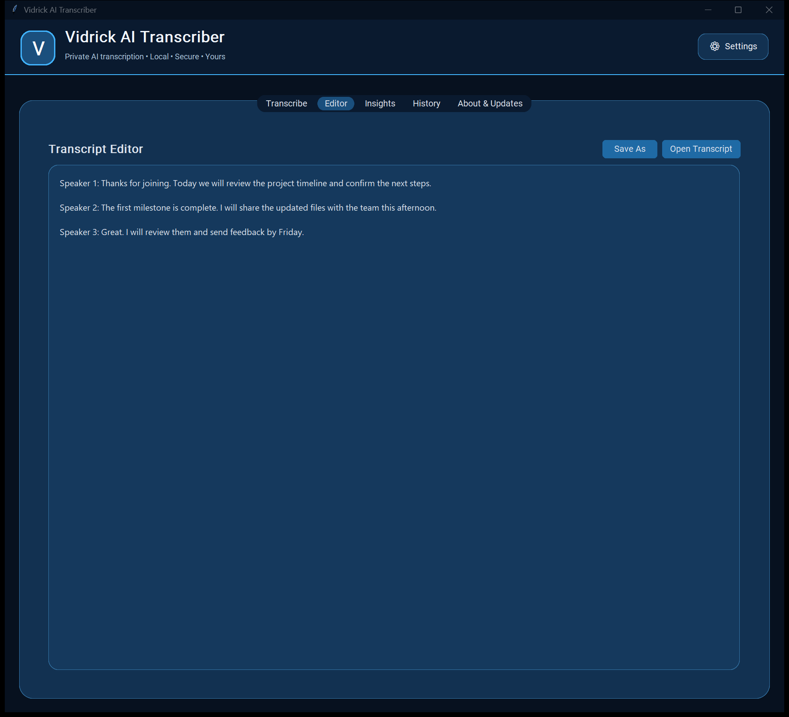

Choose your recording
Open an audio or video file. Select a language, or use Auto-detect. Let Vidrick identify the speakers, or set the expected count.
Turn interviews, meetings, and podcasts into readable transcripts, speaker labels, and useful takeaways. All processed locally on your Windows PC.
No credit card. No automatic charge.

From a quick conversation to a long interview, keep your work in one place.
Open an audio or video file. Select a language, or use Auto-detect. Let Vidrick identify the speakers, or set the expected count.
We’ve worked hard to improve speaker identification, but no automated system is perfect. Review your transcript and speaker labels, checking names, speaker changes, and important quotes against your recording.
Save TXT or Word documents, or SRT/VTT subtitles. Use AI Insights for takeaways and local history to revisit your work.
Getting started: Create an account, activate your trial, and download Vidrick. Internet access is needed for setup, component downloads, and license checks—not for uploading your recordings.
*Personal uses your CPU. Professional adds acceleration on compatible NVIDIA GPUs. Processing time varies with recording length, settings, and hardware.

See a structured summary alongside action items and key points. Bring decisions, follow-ups, and stated deadlines into view without sending your transcript to a cloud service.
Always review the output against your transcript before sharing or acting on it.
• We agreed to launch the new customer guide next Friday.
• A delay in screenshot approval could affect the launch.
• Maya will send the draft guide by Tuesday.
• Jordan will review the screenshots by Thursday.
• Sam will confirm the final checklist by Friday.
• Do we need a separate guide for new customers?
☐ Maya will send the draft guide by Tuesday.
[Due: Tuesday]
☐ Jordan will review the screenshots by Thursday.
[Due: Thursday]
☐ Sam will confirm the final checklist by Friday.
[Due: Friday]
✓ We agreed to launch the new customer guide next Friday.
We agreed to launch the new customer guide next Friday. Maya will send the draft guide by Tuesday. Jordan will review the screenshots by Thursday. Sam will confirm the final checklist by Friday. A delay in screenshot approval could affect the launch. Do we need a separate guide for new customers?
Smaller processing steps and memory-aware CPU settings help manage resources. Transcription models are released before speaker analysis.
Updated speaker analysis compares recurring voices across long recordings. Review cues help you focus on uncertain matches before sharing.
Transcription and speaker analysis show separate progress. When a time estimate is uncertain, Vidrick shows that processing is continuing.
Version 4.3.4 updates the trusted HTTPS certificate list used for licensing, updates, and model downloads, while keeping certificate verification and license protections in place.
On 4.3.1? If the in-app updater is blocked, close Vidrick and install the latest Windows version once to restore updating.
Start with 7 days of Professional, free. No credit card and no automatic charge.
Private, unlimited local transcription for individuals who don’t need GPU acceleration.
Everything in Personal, with compatible NVIDIA GPU acceleration for faster local processing.
Private transcription for organizations that need flexible licensing and deployment support.
Already using Vidrick? Manage your subscription, devices, and downloads in the Customer Portal